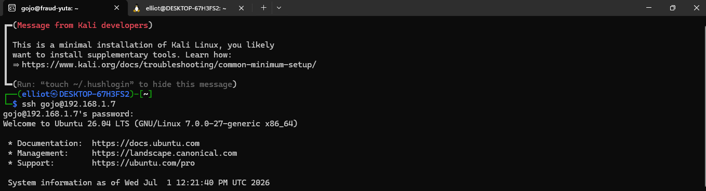
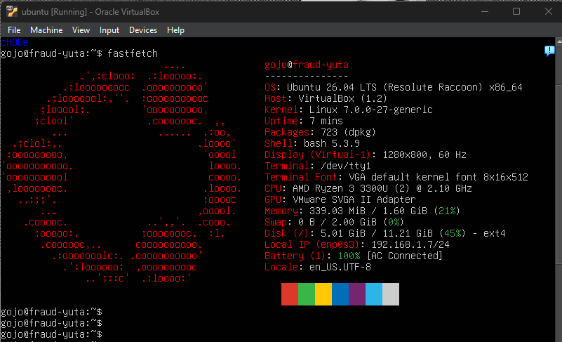
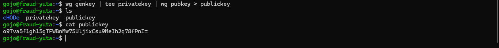
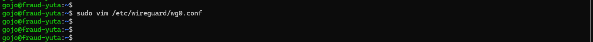
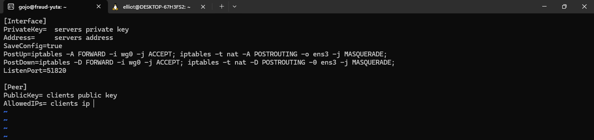
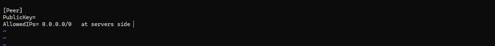
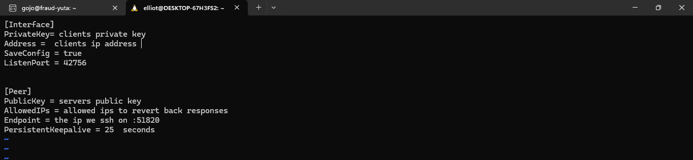

How I Configured WireGuard VPN from Scratch: Server & Client Setup
So, I recently got my hands on a completely fresh Ubuntu 24.04 VPS and decided it was the perfect playground to set up my own secure, high-performance VPN tunnel. If you've been reading up on modern networking, you already know that WireGuard is the absolute gold standard right now—it's insanely fast, lightweight, and way simpler than old-school protocols like OpenVPN.

The Objective
- Deploy a fully functioning WireGuard server on an Ubuntu 24.04 VPS.
- Configure the server interface subnet on
10.100.0.1/24. - Connect my local machine running WSL Kali Linux as a secure peer.
- Verify a working cryptographic handshake from both endpoints using
wg show.
Step-by-Step Implementation
Step 1: Gaining Access and Prepping the Systems
First things first, I needed to log into the remote server. I was given the VPS IP address and the corresponding SSH Private Key.
To get things moving, I opened up VIM on my local environment, created a file named
wireguard_key, and pasted the private key contents right in. Because SSH is super
strict about file permissions, I immediately dropped into the terminal and locked it down:
chmod 600 wireguard_keyWith permissions sorted out, I initiated the connection:
ssh -i wireguard_key ubuntu@<vps-ip>Boom, success! I was in.

Before installing any new packages, it's always best practice to pull down the latest package updates. I split my workspace into two terminal views—one for the remote VPS and another for my local WSL Kali Linux—and upgraded both environments simultaneously:
sudo apt update && sudo apt upgrade -yStep 2: Installing WireGuard and Generating Keys
Next up came the actual installation. WireGuard is baked right into the standard Ubuntu and Kali repositories, so setting it up on both sides was dead simple:
sudo apt install wireguard -y
WireGuard relies on asymmetric cryptography, meaning both the server and client need their own
unique private and public key pairs to authenticate each other securely. I used the built-in
wg genkey utility to generate these pairs, piping the private keys directly into
the public key generators:
wg genkey | tee privatekey | wg pubkey > publickeyI carefully ran this on both sides, grabbed the strings using cat privatekey and
cat publickey, and temporarily saved them to my desktop directory so I could swap
them into the configuration templates.
Step 3: Spinning Up the Server Profile
With keys ready, it was time to build the server configuration block. I fired up VIM to create the interface layout file:
sudo vim /etc/wireguard/wg0.conf
Inside, I bound the server interface to the requested IP 10.100.0.1/24 and specified
the standard listening port 51820. I also declared my local Kali machine as an
authorized peer, using the client's public key and setting up the allowed IP routing space.
After checking everything over, I saved and exited using :wq.

To bring the virtual interface online and make sure it automatically kicks off whenever the server reboots, I initialized the systemd unit files:
sudo systemctl enable wg-quick@wg0
sudo systemctl start wg-quick@wg0
sudo systemctl status wg-quick@wg0(Tip: For quick testing cycles, you can also just use sudo wg-quick up wg0 to
spin it up immediately!)
Step 4: Aligning the Client Configuration (WSL Kali)
Switching over to my second terminal tab for local configurations, I opened up a mirror file structure on the Kali Linux environment:
sudo vim /etc/wireguard/wg0.conf
Here, I assigned the client its own unique internal tunnel IP (like 10.100.0.2/24),
populated its local private key, and pointed the outbound endpoint directly at the remote VPS IP
address on port 51820. To ensure the route handles internet traffic properly, I set
the AllowedIPs scope to 0.0.0.0/0. I closed out VIM with another quick
:wq and spun the client interface up:
sudo wg-quick up wg0Step 5: Firewalls, Routing, and Handshake Verification
To allow the inbound tunnel packets to actually hit the WireGuard service without getting dropped at the border, I adjusted the Uncomplicated Firewall (UFW) rules on the server:
sudo ufw allow 51820/udpI also verified if IPv4 packet forwarding was active at the kernel level so traffic could properly route through the interface:
cat /proc/sys/net/ipv4/ip_forward
Finally, it was time for the moment of truth. To make sure the encrypted tunnel was actively passing traffic back and forth, I checked the status utility on both sides:
wg showLooking at the output on both the server and client terminals, the peer entries matched cleanly, showing active session timers, data transfer rates, and a fresh, successful cryptographic handshake!
OVERALL STATUS: SUCCESS
Lessons & Deep-Dive Discoveries
- Automated Install Wizards: While manually spinning up interfaces and mapping configs is an awesome way to truly understand what's happening under the hood, I discovered during my research that there are automated Git repository setup wizards out there that can deploy entire multi-peer infrastructures in seconds.
- Global Routing: Setting the routing configuration to
0.0.0.0/0forces all client traffic directly through our secure VPS endpoint. - Persistent Connections: To prevent stateful NAT firewalls or home routers
from dropping the connection during idle periods, I explicitly threw
PersistentKeepalive = 25into the configuration block—keeping the tunnel persistently alive and humming every 25 seconds!